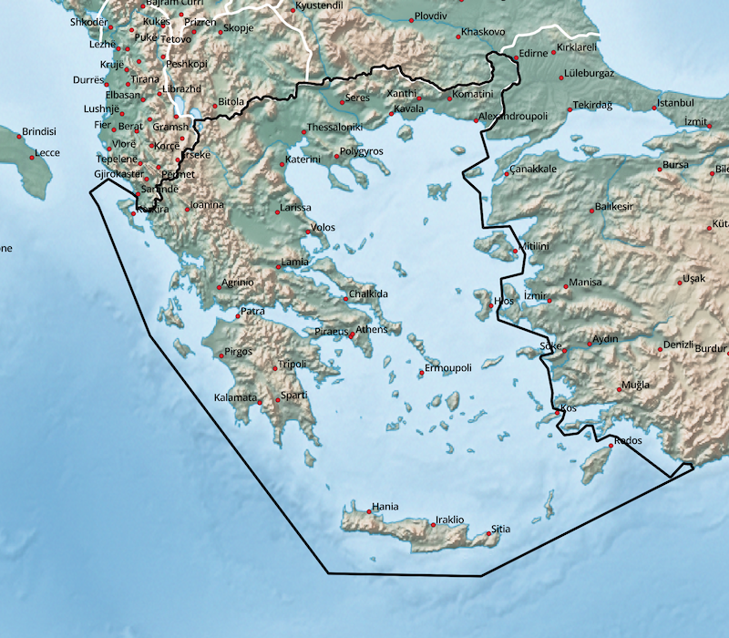
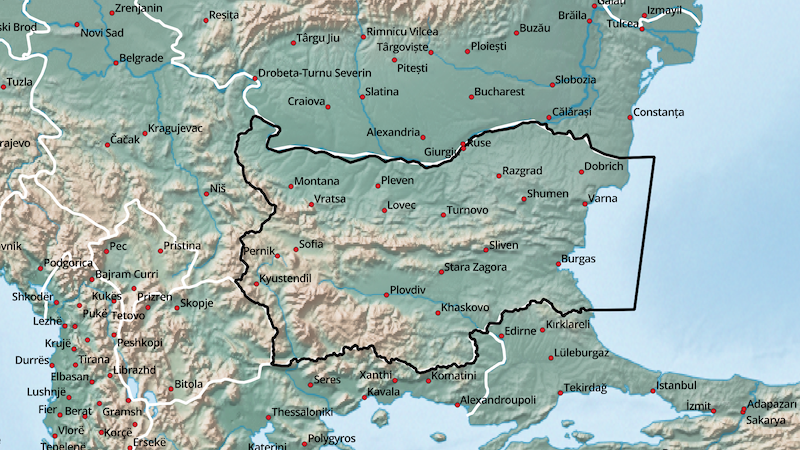
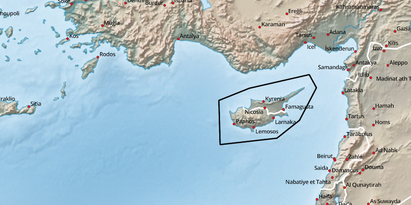
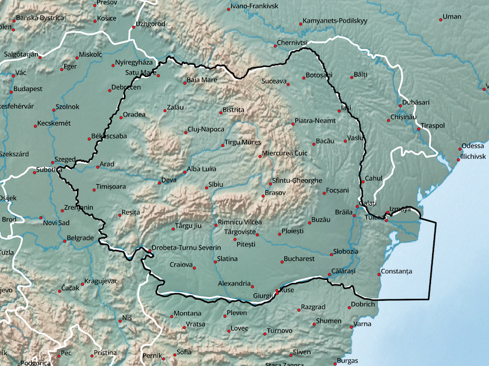
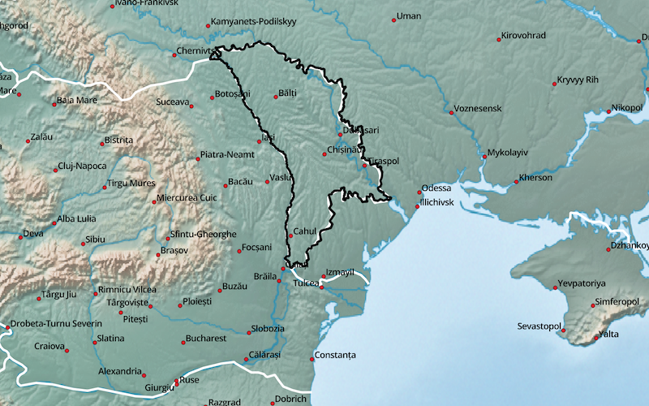
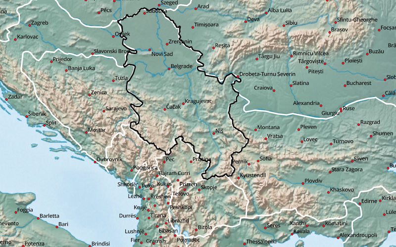
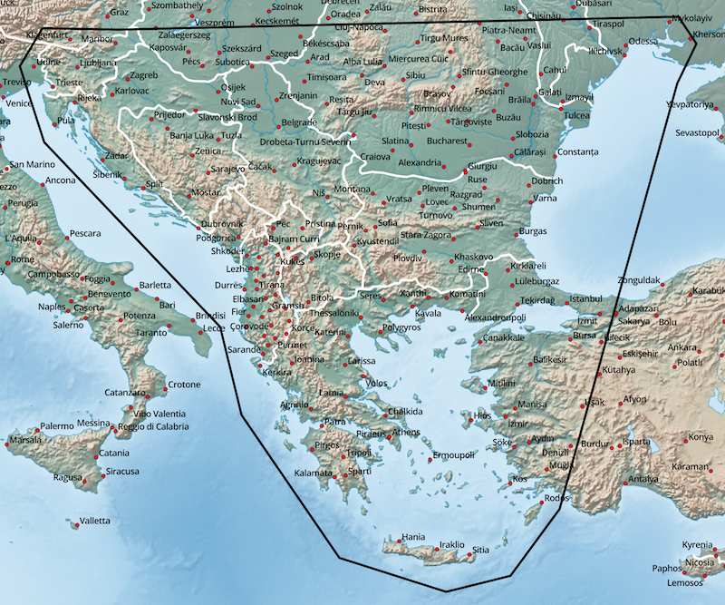

South Eastern Europe - available Maps:
- Hellenic Republic (GRC, Greece)
- Republic of Bulgaria (BGR)
- Cyprus (CYP, Island)
- Romania (ROU)
- Republic of Moldova (MDA)
- Republic of Serbia (SRB)
- Region Balkans (BALKAN)
Tips concerning download:
- gmapsupp: installation image for micro SD card (GPS-Device)
- installer: installation archive for Garmin BaseCamp (Windows)
- gmap: GMAP archive for Garmin BaseCamp (macOS)
Hellenic Republic (GRC, Greece):

| Language | GPS-Device | Windows | macOS |
|---|---|---|---|
| English | gmapsupp | installer | gmap |
| German | gmapsupp | installer | gmap |
Republic of Bulgaria (BGR):

| Language | GPS-Device | Windows | macOS |
|---|---|---|---|
| English | gmapsupp | installer | gmap |
Cyprus (CYP, Island):

| Language | GPS-Device | Windows | macOS |
|---|---|---|---|
| English | gmapsupp | installer | gmap |
Romania (ROU):

| Language | GPS-Device | Windows | macOS |
|---|---|---|---|
| English | gmapsupp | installer | gmap |
Republic of Moldova (MDA):

| Language | GPS-Device | Windows | macOS |
|---|---|---|---|
| English | gmapsupp | installer | gmap |
Republic of Serbia (SRB):

| Language | GPS-Device | Windows | macOS |
|---|---|---|---|
| English | gmapsupp | installer | gmap |
Region Balkans (BALKAN):

| Language | GPS-Device | Windows | macOS |
|---|---|---|---|
| English | gmapsupp | installer | gmap |